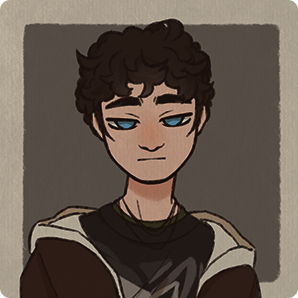

O mne,
Som Matúš Matiaško
Volám sa Matúš Matiaško. Som žiakom piaristickej školy Františka Hanáka. Chodím do triedy 2F odbor grafik digitálnych médií a rád sa venujem grafickému dizajnu so zameraním na ilustráciu a vizuálne rozprávanie. Inšpirujem sa gothic štýlom, fantasy svetmi a melancholickou náladou.
Vo voľnom čase sa tiež rád venujem tvorbe a preto navštevujem aj umeleckú školu a zároveň i doma stále kreslím či tvorím... V budúcnosti by som sa rád venoval dizajnom charakterov do hier a animovaných filmov. Samostatná animácia ma tiež veľmi baví a preto by som sa v nej chcel zlepšiť. Celkovo sa chcem v mojich zručnostiach zlepsovať a posúvať sa naďaľej ďaľej
Sofvérové zručnosti :
-Adobe Animate
-Adobe Photoshop
-Adobe Illustator